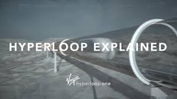
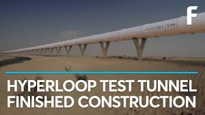
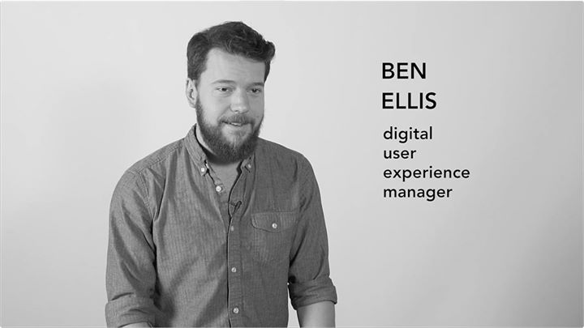
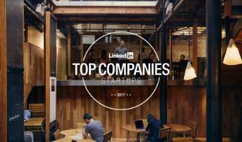

Hyperloop Develops Strategic Partnership With Virgin Group
In Partnership With :
Learn More About Hyperloop
Be Anywhere.Move Anything.Connect Everyone.

Hyperloops Explained
Hyperloop is the first new major mode of transportation in 100 years. It's designed to be safe
, energy efficient and reliable. It will take you directly to your destination at speeds of upto 700
mph, above land or underground.

How it became a reality ?
We have developed a proprietory electric propulsion system which was tested first in May 2016
in an open air propulsion test,in May 2017 in our first full systems test, and again in July 2017 during
our Phase 2 testing.
Why Do We Need A Hyperloop ?
A growing global economy requires faster,cheaper , safer and more efficient transportation
modes.Our roads,airports and ports are congested.We haven't had a major new form of transport in 100 years,
and we're due for one that is ultra fast,on-demand,direct,emission-free,energy efficient,quiet and has a
smaller footprint than other high-speed transport modes.
Introducing XP-1
The first-generation vehicle of the Hyperloop One system.
XP-1 is the most advanced vehicle of this generation which travels faster than you think.
What's Happening at Hyperloop One ?
News From All Over The Globe
Thu,11/30/2017 - 17:34
As next generation transportation evolves,the distance between satellite cities and major urban centers will decrease and connectivity will increase.
Mon,12/04/2017 - 18:24
There are four main differences. It is faster,as in two to three times faster than fastest rail. It is on demand and direct.It is environmentally friendly.
Wed,11/15/2017 - 08:02
His Royal Highness talks about how cahange is coming and how the next 30 years will be differnt.- Josh Giegel,Hyperloop One Co-founder & CTO #MiskGlobalForum
Thu,12/07/2017 - 23:11
As next generation transportation evolves,the distance between satellite cities and major urban centers will decrease and connectivity will increase.

Mon,11/27/2017 - 18:04
There are four main differences. It is faster,as in two to three times faster than fastest rail. It is on demand and direct.It is environmentally friendly.
Wed,12/06/2017 - 18:26
His Royal Highness talks about how cahange is coming and how the next 30 years will be differnt.- Josh Giegel,Hyperloop One Co-founder & CTO #MiskGlobalForum
Wed,11/29/2017 - 18:02
As next generation transportation evolves,the distance between satellite cities and major urban centers will decrease and connectivity will increase.
Thu,11/16/2017 - 16:55
There are four main differences. It is faster,as in two to three times faster than fastest rail. It is on demand and direct.It is environmentally friendly.

Thu,11/02/2017 - 17:28
There are four main differences. It is faster,as in two to three times faster than fastest rail. It is on demand and direct.It is environmentally friendly.
Thu,11/16/2017 - 20:29
As next generation transportation evolves,the distance between satellite cities and major urban centers will decrease and connectivity will increase.
Wed,10/25/2017 - 17:17
His Royal Highness talks about how cahange is coming and how the next 30 years will be differnt.- Josh Giegel,Hyperloop One Co-founder & CTO #MiskGlobalForum
These are some of many things we share online.To see them all,click here.
We are Hiring!!
At Hyperloop,you will feel empowered and important,
and you will be heard.Join our team and help us create a world more efficient.Make this world a better place